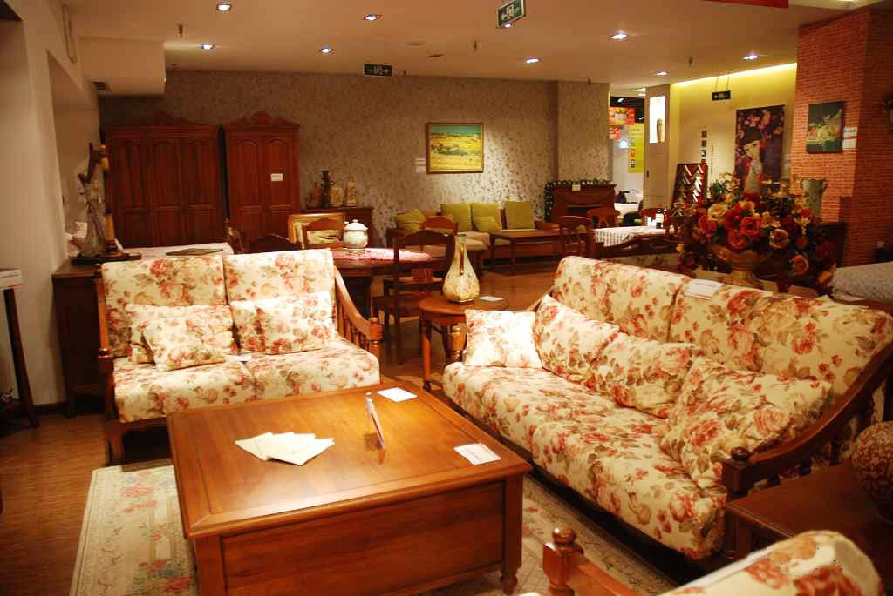

概念
田园乡村风格是一般人对英国式家居的印象，一些花花草草的配饰，华美的家饰布及窗帘衬托出英国独特的居室风格，小碎花图案是英式乡村调子的主题，英式手工沙发线条优美、颜色秀丽，注重面布的配色及对称之美，越是浓烈的花卉图案或条纹表现就越能传达出英式风格的味道。

橡木时期
早期的英国家具以橡木为主。在十五世纪哥特式家具时期，英式家具呈现严肃而单纯的风格。采用框架镶板结构方式及典型的窗格花饰及折叠亚麻布装饰。
停滞时期
英国的装饰家具发展的较为迟缓，当巴黎等地的家具风格已从文艺复兴盛期转入晚期时，此风格才传入英国并开始流行起来，直到伊莉莎白女王时代，英国家具艺术才走上新的途径。
英国摄政时期
英国摄政时期的作品设计大多为形式、标准、装饰简单的表面。部件形状主要是矩形，木材以黒檀、黄檀、红木为主要材质。装饰有细微雕刻、凸线、狮足、合金雕镂、黄铜嵌带和带有金属线格的柜门。
胡木桃时期
胡桃木之取代橡木始于十七世纪中期，胡桃木易于细雕工，所以这时候的英国家具比早期的家具更为精致而进步。在十七世纪末期，英国家具即抛弃了这种流风，转而专心致力于本土胡桃木家具的发展，外型上流露出质朴而素雅的感觉。本时期的英国家具均采用了胡桃木为材料，因此被称为"胡桃木时期"。
威廉玛丽式
这时期的家具风格摈弃了过去那种过度的宏大和华丽的风格，形成一种唯英国本土所有的简洁冼练的家具形式，腿部大都是旋制部件，用“S”形拉杆连接，荷兰酒杯脚和涡卷脚是弯曲底脚的基本形式，还有喇叭形脚和馒头形脚。
乔治一世式
从乔治一世于1714年继位起到1837年维多利亚女王统治时代为止，统称乔治王朝。乔治一世时的家具最初沿用安妮女王式的风格，但更多的装饰开始采用柔和温婉的曲线形，“S”形腿被动物形腿取代，成为球爪脚或蹄形脚。狮头、植物涡卷叶饰、复杂的岩石和贝壳、女神像等巴洛克的手法仍有沿用。桃花心木在这一时期开始被大量使用，取代了胡桃木的地位，成为表现豪华的古典雕刻题材的最佳选择。在乔治二世和三世期间，英国出现了影响整个家具世界的几位大师——齐朋代尔、亚当兄弟、赫泊怀特、和谢尔顿。
谢尔顿式
谢尔顿早期的设计是近似路易十六式的古典式样，部分雕刻喜欢用赫泊怀特常用的S形曲线，对一些平面部位进行镶嵌，后来还喜爱陶瓷镶嵌。他喜欢复杂的机械装置，如折叠桌、家具中的暗抽屉和密道、各种巧妙的机关和多功能的结构，都是他的独到之处。他的设计基本以直线为主，强调纵向的伸展，家具的脚部用金属箍住或加上轮子。家具功能很多，梳妆桌可做书桌、书架。他设计的椅子尺度适当，比例相宜，大部分为方形靠背，也有盾牌形的，他设计的大型柜体相对赫泊怀特式更注重功能的多样性与使用的方便性，腿与腿之间少用拉档，顶部常设计成破山花式上楣或平顶起檐，柜门采用玻璃花格。